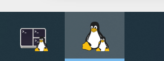
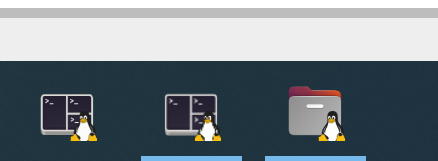

Problem
As I have explained in https://github.com/microsoft/wslg/issues/944
some icons are missing and defaulting to Tux

Update April/21 23: with WSL v1.2.x, this has been broken again.
https://github.com/microsoft/wslg/issues/944#issuecomment-1517301808

Here is the changelog of WSL 1.2.5
Update April/4 23: with WSL v1.1.7, this has been fixed.

Here is the changelog of WSL 1.1.7